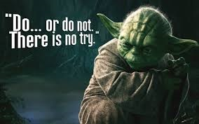
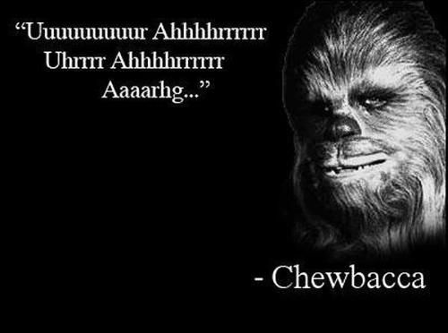
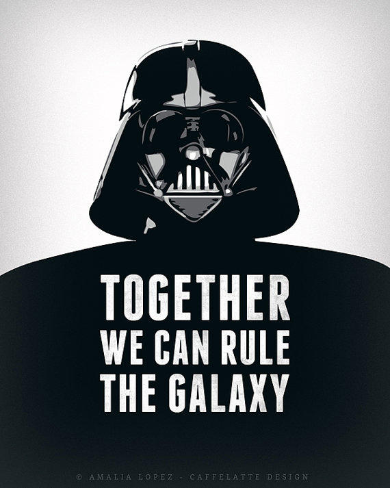

Yoda
Meer informatie over Yoda (star was)
Yoda was een van de meest bekende en machtige Jedi Masters in geschiedenis van het star wars universum.
Geroemd en geliefd omwille van zijn zachtaardige inborst, zijn legendarische wijsheid, en beheersing van de Force en Lightsaber, was Yoda één van de boegbeelden van de Jedi Order. Yoda diende als een lid van de Jedi High Council in de laatste jaren van de Galactic Republic en regeerde als Grand Master van de Jedi Order vóór, tijdens en na de verwoestende Clone Wars. In zijn eeuwen van dienstverlening aan het universum en de Force, had Yoda een hand in de opleiding van vele Jedi, zoals die van bijvoorbeeld Obi-Wan Kenobi.
Chewbacca
Meer informatie over Chewbacca (star was)
Chewbacca (in sommige ondertitelingen vertaald als Pruimtabak) is een personage uit de Star Warssaga van George Lucas.
Chewbacca is de 200 jaar oude Wookiee co-piloot van de Millennium Falcon, het schip van Han Solo. Zowel tijdens de Clone Wars als tijdens de Civil War speelde deze machtige krijger een cruciale rol.
Chewbacca werd vertolkt door Peter Mayhew. Chewbacca's kenmerkende stemgeluid werd ontworpen door geluidstechnicus Ben Burtt, die hiervoor een de geluiden van onder andere kamelen, beren, walrussen, konijnen, tijgers en dassen door elkaar mixte. Lucas baseerde het personage op zijn hond Indiana die steeds naast zijn ex-vrouw in de auto zat.
Dart Vader
Meer informatie over Dart Vader (star was)
Darth Vader is een fictief personage uit de Star Wars-films.
Hij is als legerofficier ondergeschikt aan keizer Palpatine, ook bekend als Darth Sidious. In de jaren 1977, 1980 en 1983 werd Darth Vader gespeeld door de stuntmannen David Prowse en Bob Anderson. Zijn stem werd echter ingesproken door James Earl Jones.